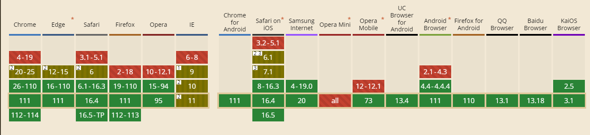

# 移动端适配：
在做移动端开发时，为了使移动端的页面在不同的手机上以同样的大小来显示，我们可以将页面的宽度固定，然后获取设备的宽度，可以得到我们之前设定的宽度与设备宽度的比例，再使用 HTML5 新增的 viewport 来对页面进行缩放，并固定不允许用户再重新缩放。
在 index.html 增加该配置
<meta
name="viewport"
content="width=device-width, initial-scale=1.0, minimum-scale=1.0, maximum-scale=1.0, user-scalable=no,viewport-fit=cover"
>
# rem 适配 (淘宝和百度方案)
计算公式：
根字体 = （设备视口宽度 * 100） / 设计稿宽度
<script>
// 获取布局视口宽度
const dpWidth = document.documentElement.clientWidth
// 计算根字体大小
const rootFontSize = (dpWidth * 100) / 375
// 设置根字体大小
document.documentElement.style.fontSize = rootFontSize + 'px'
</script>
设置完根字体大小后，后续所有页面都以 rem 为单位，值为 设计稿的像素值 / 100，例如 14px = 0.14rem，这样在不同设备上都是 0.14rem, 但不同设备的 rem 代表的像素值不同，从而实现适配
# vw 适配
它的特点很明显，没有 js 代码，但是兼容性却不好

vw: 把布局视口分成 100 份，1vw = 1% 的布局视口 = 1% 的视觉视口
vh: 就是 1% 的视口高度
用 less 计算
@basic: 375 / 100vw;
*{
margin: 0;
padding: 0;
}
.demo{
width: (100/@basic);
height: (100/@basic);
background-color: black;
}
# 大屏响应式：
# rem 适配
通过设置根字体大小 1rem=**px，设置完根字体大小后，后续所有页面都以 rem 为单位，但不同设备的 1rem 代表的像素值不同，从而实现适配
export default {
data() {
return {}
},
mounted() {
this.getRem()
window.addEventListener('resize', this.getRem);
this.$on('hooK:beforeDestroy', () => {
window.removeEventListener('resize', this.getRem);
})
},
methods: {
getRem () {
const pwidth = 1920 // 设计图大小
const prem = 1
const html = document.getElementsByTagName('html')[0]
const oWidth = window.innerWidth || document.body.clientWidth || document.documentElement.clientWidth // 屏幕大小
html.style.fontSize = (oWidth / pwidth) * prem + 'px'
}
}
}
缺点：
大屏使用 rem 耗时，而且对浏览器最小字体不支持
# scale 缩放实现
使用 scale 可以节省百分之九十工作量，但是缺点：
如果大屏有地图，缩放会导致地图定位有问题，请根据使用场景选择最佳方案
创建一个组件 SacleBox
<template>
<div
class="ScaleBox"
ref="ScaleBox"
:style="{
width: width + 'px',
height: height + 'px',
}"
>
<slot></slot>
</div>
</template>
<script>
export default {
name: "ScaleBox",
data() {
return {
width: 1920,
height: 1080,
};
},
mounted() {
this.setScale();
window.addEventListener('resize', this.debounce(this.setScale));
this.$on('hooK:beforeDestroy', () => {
window.removeEventListener('resize', this.debounce(this.setScale))
})
},
methods: {
setScale() {
// 固定好16：9的宽高比，计算出最合适的缩放比
const { width, height } = this;
const wh = window.innerHeight / height;
const ww = window.innerWidth / width;
const scale = ww < wh ? ww : wh;
if (this.$refs.ScaleBox) {
this.$refs.ScaleBox.style.setProperty("--scale", scale);
}
},
debounce(fn, delay) {
const delays = delay || 500;
let timer;
return function () {
const args = arguments;
timer && clearTimeout(timer);
timer = setTimeout(() => {
timer = null;
fn.apply(this, args);
}, delays);
};
},
},
};
</script>
<style lang="scss">
.ScaleBox {
--scale: 1;
position: absolute;
left: 50%;
top: 50%;
transform: scale(var(--scale)) translate(-50%, -50%);
transform-origin: 0 0;
transition: 0.3s;
z-index: 999;
}
</style>
大屏引入 ScaleBox 实现缩放
<template>
<scale-box>
// 业务代码
</scalebox>
</template>
<script>
import ScaleBox from '@/components/scale-box/index.vue'
export default {
name: "home",
components: { ScaleBox },
data () {
return {
};
},
}
</script>